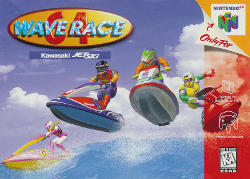

Wave Race 64 is a 1996 racing video game developed and published by Nintendo for the Nintendo 64. Gameplay involves the player racing on a personal wavecraft on a variety of courses while successfully maneuvering the vehicle around various buoys. A multiplayer mode where two players can compete against each other on a chosen course is also included. The supports the Controller Pak, which allows players to transfer saved data from one game cartridge to another.
Originally referred to as "F-Zero on water", the game was intended to feature high-speed boats width transforming capabilities, but these were ultimately replaced with Jet Skis as producer Shigeru Miyamoto felt that the game would not be differentiated enough from other titles on the systems. Wave Race 64 recieved acclaim from critics, who praised the game's satifying controls and dynamic watery environments. The game is credited with helping Nintendo effectively make its paradigmatic leap from the 16-bit 2D graphics of the Super Nintendo Entertainment System to the Nintendo 64's 3D capabilities. It was re-released for the Wii and Wii U's virtual Console in 2007 and 2016, respectively, and on the Nintendo Switch Online + Expansion Pack in 2022. A sequel, Wave Race: Blue Storm, was releaed for the Gamecube in 2001.
Wave race 64 is a racing video game in which
the players race on personal water craft
in
different weather conditions and on a variety of
courses. The game features three Single-player
modes
(Championship, Time Trials, and Stunt
Mode) as well as a multiplayer mode for
competitive play. In the championship mode,
the player must race opponents through a
series of courses and win first place. Up to four
levels can be chosen:
Normal, Hard, Expert,
and Reverse, the latter being the Expert track
with the track oriented backwards.
Hard, Expert,
and Reverse must be unlocked by completing an
earlier difficulty. The difficulty also determines
the
number of courses played: six in Normal, seven in Hard, and eight in Expert/Reverse.
When the player completes a course, points are awarded based on the rank they finished. If the quantity is not met,
the player will be disqualified and the game will be over.
While racing opponents, the player must successfully manoeuvre the Jet Ski around various buoys. There are two types of buoys: red colored, which must be passed on the right side, and yellow buoys, which must be passed on the left side. Each time a buoy is correctly passed, a power arrow in the game's HUD will light, allowing the player's watercraft to gain speed. Up to five power arrows can be lit in order to obtain maximum power. Therefore, maintaining this process will allow the player to maintain a high speed. Failure to correctly pass a single buoy will result in the loss of all the player's accumulated power (though the power arrows can be lit again one by one) and missing five buoys over the course of a race will result in disqualification. Leaving the course area limited by pink buoys for more than five seconds will also result in disqualification.
In Time Trials, the player can freely race on a course to perform the best times, which are recorded in the game's data. In the Stunt Mode, the player must earn points by executing stunts and passing through rings. The points depend upon how many rings the player passes through without missing, as well as the class of stunt that has been performed. The multiplayer mode uses a horizontal split-screen and allows two players to compete against each other on a chosen course. Only the courses that have been unlocked in the Championship mode can be played in the Time Trials, Stunt, and multiplayer modes. The game offers four personalized racers for players to select from, each having their own strengths and weaknesses. A Nintendo 64 Controller Pak can be used to transfer saved data from one game cartridge to another.
| Wave Race 64 | |
|---|---|
|

North American N64 box art
| |
| Developers | Nintendo EAD |
| Publishers | Nintendo |
| Directors | Katsuya Eguchi Shinya Takahashi |
| Producers | Shigeru Miyamoto |
| Programmers | Keizo Ohta |
| Series | Wave Race |
| Platforms | Nintendo 64 iQue Player Nintendo Switch |
| Release | Nintendo 64 JP: September 27, 1996 NA: November 4, 1996 PAL: April 29, 1997 iQue Player CHN: November 2003 Nintendo Switch NA: August 19, 2022 |
| Genres | Racing |
| Modes | Single-player, multiplayer |